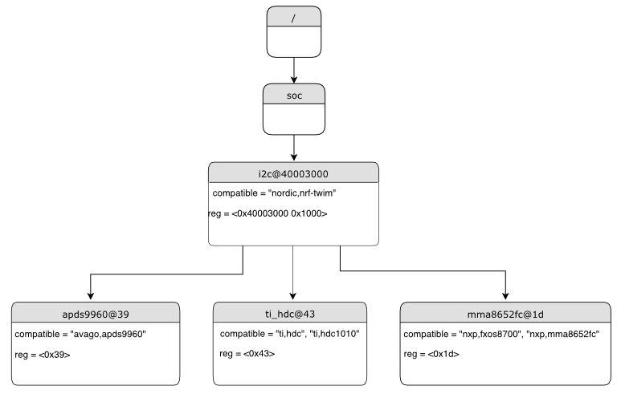

语法和结构
顾名思义，设备树（devicetree）是一棵树。这棵树的人类可读文本格式称为 DTS（devicetree source，设备树源码），由 Devicetree specification 定义。
本页旨在以比规范更循序渐进的方式介绍设备树。不过，要理解某些细节情况，你可能仍需参考规范。
示例
下面是一个 DTS 文件示例：
/dts-v1/;
/ {
a-node {
subnode_nodelabel: a-sub-node {
foo = <3>;
};
};
};
/dts-v1/; 这一行表示文件内容采用版本 1 的 DTS 语法，该版本取代了现已废弃的“版本 0”。
节点
与任何树形数据结构一样，设备树由层次化的 节点（node）构成。上面的树有三个节点：
根节点：
/名为
a-node的节点，它是根节点的子节点名为
a-sub-node的节点，它是a-node的子节点
可以为节点分配 节点标签（node label），它是指代被标记节点的唯一简称。上例中，a-sub-node 的节点标签为 subnode_nodelabel。一个节点可以有零个、一个或多个节点标签。可以使用节点标签在设备树的其他位置引用该节点。
设备树节点具有标识其在树中位置的 路径（path）。与 Unix 文件系统路径类似，设备树路径是以斜杠（/）分隔的字符串，根节点的路径是一个斜杠：/。除根节点外，每个节点的路径由其各级祖先节点的名称与自身名称以斜杠连接而成。例如，a-sub-node 的完整路径为 /a-node/a-sub-node。
属性
设备树节点还可以具有 属性（property）。属性是名称/值对，属性值可以是任意字节序列。在某些情况下，值是由所谓的 单元（cell）组成的数组。单元就是一个 32 位无符号整数。
节点 a-sub-node 有一个名为 foo 的属性，其值是一个值为 3 的单元。foo 值的大小和类型由 DTS 中包围它的尖括号（< 和 >）隐含表示。
更多属性值示例请参见下文的 书写属性值。
设备树反映硬件
在实践中，设备树节点通常对应某个硬件，节点层次结构反映硬件的物理布局。例如，考虑一块开发板，其上有三个 I2C 外设连接到 SoC 上的一个 I2C 总线控制器，如下所示：

设备树中会存在对应 I2C 总线控制器和每个 I2C 外设的节点。为了反映硬件布局，I2C 外设节点是总线控制器节点的子节点。表示其他类型的硬件也有类似的约定。
DTS 大致如下所示：
/dts-v1/;
/ {
soc {
i2c-bus-controller {
i2c-peripheral-1 {
};
i2c-peripheral-2 {
};
i2c-peripheral-3 {
};
};
};
};
实践中的属性
在实践中，属性通常用于描述或配置节点所代表的硬件。例如，I2C 外设节点有一个属性，其值为该外设在总线上的地址。
下面这棵树表示同一个示例，但使用了在处理 I2C 设备时可能见到的真实节点名称和属性。

使用真实名称和属性的 I2C 设备树示例。节点名称位于每个节点顶部的灰色背景中，属性以“name=value”行的形式显示。
对应的 DTS 如下：
/dts-v1/;
/ {
soc {
i2c@40003000 {
compatible = "nordic,nrf-twim";
reg = <0x40003000 0x1000>;
apds9960@39 {
compatible = "avago,apds9960";
reg = <0x39>;
};
ti_hdc@43 {
compatible = "ti,hdc", "ti,hdc1010";
reg = <0x43>;
};
mma8652fc@1d {
compatible = "nxp,fxos8700", "nxp,mma8652fc";
reg = <0x1d>;
};
};
};
};
单元地址
除了展示更真实的名称和属性外，上面的示例还引入了一个新的设备树概念：单元地址（unit address）。单元地址是节点名称中 at 符号（@）之后的部分，例如 i2c@40003000 中的 40003000，或 apds9960@39 中的 39。单元地址是可选的：soc 节点就没有单元地址。
在设备树中，单元地址给出节点在其父节点地址空间中的地址。下面是不同类型硬件的一些单元地址示例。
- 内存映射外设
外设寄存器映射的基地址。例如，名为
i2c@40003000的节点表示一个寄存器映射基地址为 0x40003000 的 I2C 控制器。- I2C 外设
外设在 I2C 总线上的地址。例如，上一节中 I2C 控制器的子节点
apds9960@39的 I2C 地址为 0x39。- SPI 外设
表示外设片选线编号的索引。（如果没有片选线，则使用 0。）
- 内存
物理起始地址。例如，名为
memory@2000000的节点表示从物理地址 0x2000000 开始的 RAM。- 内存映射 Flash
与 RAM 一样，表示物理起始地址。例如，名为
flash@8000000的节点表示一个物理起始地址为 0x8000000 的 Flash 设备。- 固定 Flash 分区
这适用于用设备树存储 Flash 分区表的情况。单元地址是分区在 Flash 存储器中的起始偏移。例如，以下面的 Flash 设备及其分区为例：
flash@8000000 { /* ... */ partitions { partition@0 { /* ... */ }; partition@20000 { /* ... */ }; /* ... */ }; };
名为
partition@0的节点距其 Flash 设备起始处的偏移为 0，因此其基地址为 0x8000000。同理，名为partition@20000的节点的基地址为 0x8020000。
重要属性
设备树规范定义了若干标准属性，其中最重要的一些如下：
- compatible
节点所代表的硬件设备的名称。
推荐的格式为
"vendor,device"，例如"avago,apds9960"，或者由多个这样的值组成的序列，例如"ti,hdc", "ti,hdc1010"。vendor部分是厂商名称的缩写，文件 dts/bindings/vendor-prefixes.txt 中列出了普遍接受的vendor名称。device部分通常取自数据手册。当硬件行为是通用的时，它有时也取
gpio-keys、mmio-sram或fixed-clock之类的值。构建系统使用 compatible 属性为节点查找正确的 绑定。设备驱动使用
devicetree.h查找具有相关 compatible 的节点，从而确定可供管理的硬件。compatible属性可以有多个值。当设备是某个更通用系列中的特定成员时，附加的值很有用，它使系统能够按从最具体到最通用的顺序匹配设备驱动。在 Zephyr 的绑定语法中，该属性的类型为
string-array。- reg
用于寻址设备的信息。其值因设备而异（即随 compatible 属性的不同而不同）。
reg属性是由(address, length)对组成的序列，每一对称为一个“寄存器块”。按照惯例，这些值用十六进制书写。下面是一些常见模式：
通过内存映射 I/O 寄存器访问的设备（如
i2c@40003000）：address通常是 I/O 寄存器空间的基地址，length是寄存器占用的字节数。I2C 设备（如
apds9960@39及其兄弟节点）：address是 I2C 总线上的从机地址，没有length值。SPI 设备：
address是片选线编号，没有length。
你可能会注意到
reg属性与上面介绍的常见单元地址之间有一些相似之处。这并非巧合。可以把reg属性看作是比单元地址更详细地描述设备内可寻址资源的一种方式。- status
描述节点是否启用的字符串。
设备树规范允许该属性取值
"okay"、"disabled"、"reserved"、"fail"和"fail-sss"。Zephyr 将"okay"以外的任何值都视为禁用。特别地，"reserved"用于说明某个节点存在但在别处启用（例如在多域应用程序中由另一个内核或域启用），edtlib对它的处理与"disabled"相同。其余的值（"fail"和"fail-sss"）目前在 Zephyr 中未被使用。如果节点的 status 属性为
"okay"或未定义（即在设备树源码中不存在），则认为该节点已启用。status 为"disabled"的节点被显式禁用。对应物理设备的设备树节点必须启用，Zephyr 驱动模型中相应的struct device才会被分配和初始化。注意，父节点被禁用时，子节点并不会隐式地被禁用。也就是说，如有需要，应显式地禁用子节点。
- interrupts
设备所产生中断的相关信息，编码为由一个或多个 中断说明符（interrupt specifier）组成的数组。每个中断说明符包含若干个单元。更多细节请参见 Devicetree Specification release v0.3 中的第 2.4 节 Interrupts and Interrupt Mapping。
Zephyr 的设备树绑定语言允许为中断说明符中的每个单元命名。
备注
早期版本的 Zephyr 经常使用 label 属性，它与标准的 节点标签 不同。强烈不建议在新的设备树绑定中使用 label 属性，也不建议在新代码中使用 DT_LABEL 宏。由于历史原因，一些现有绑定和覆盖文件中仍保留着 label 属性，但不应在新的绑定或设备实现中使用它。
书写属性值
本节介绍如何以 DTS 格式书写属性值。下表中的属性类型在 设备树绑定 中有详细说明。
为简明起见，这里略过了一些细节。如果对细节感兴趣，请参见设备树规范。
属性类型 |
书写方式 |
示例 |
|---|---|---|
string |
用双引号括起 |
|
int |
写在尖括号（ |
|
boolean |
表示 |
|
array |
写在尖括号（ |
|
uint8-array |
以 不带 |
|
string-array |
以逗号分隔 |
|
phandle |
写在尖括号（ |
|
phandles |
写在尖括号（ |
|
phandle-array |
写在尖括号（ |
|
关于上表的补充说明：
phandle、phandles和phandle-array类型的值在 phandle 中有进一步说明布尔属性存在即为 true，不应带值。只有当布尔属性在 DTS 中完全不存在时，它才为 false。
上面的
foo属性值依次包含三个 单元，其值分别为 0xdeadbeef、1234 和 0。注意，十六进制数和十进制数都可以使用，并且可以混合使用。由于 Zephyr 会把 DTS 转换为 C 源码，这里无需指定单个单元的字节序。64 位整数写作两个按大端序排列的 32 位单元。值 0xaaaa0000bbbb1111 应写作
<0xaaaa0000 0xbbbb1111>。a-byte-array属性值依次为三个字节 0x00、0x01 和 0xab。可以使用圆括号、算术运算符和位运算符。
bar属性包含一个值为 64 的单元：bar = <(2 * (1 << 5))>;
注意，整个表达式必须用圆括号括起来。
对于
int和array类型的属性，如果某个单元的括号表达式求值结果为负数（例如<(-1)>或<(4 - 6)>），则会保留为有符号值。以正的十进制或十六进制字面量（包括0xffffffff）书写的单元，或者表达式求值结果为非负数的单元，仍为无符号值。属性值通过 phandle 引用设备树中的其他节点。可以用
&foo书写 phandle，其中foo是一个 节点标签。下面是一个设备树片段示例：foo: device@0 { }; device@1 { sibling = <&foo 1 2>; };
节点
device@1的sibling属性依次包含三个单元：device@0节点的 phandle，由于device@0节点有节点标签foo，这里写作&foo值 1
值 2
在设备树中，phandle 值是一个单元，也就是一个 32 位无符号整数。不过，Zephyr 设备树 API 通常把这些值作为 节点标识符 提供。节点标识符在 从 C/C++ 访问设备树 中有更详细的介绍。
数组及类似类型的属性值可以拆分为多个
<>块，如下所示：foo = <1 2>, <3 4>; // Okay for 'type: array' foo = <&label1 &label2>, <&label3 &label4>; // Okay for 'type: phandles' foo = <&label1 1 2>, <&label2 3 4>; // Okay for 'type: phandle-array'
如果值在逻辑上可以分组为若干子值块，建议尽可能这样书写，以提高可读性。
别名和 chosen 节点
除了 节点标签 之外，还有两种无需指定完整路径即可引用特定节点的方式：通过别名，或通过 chosen 节点。
下面是一个同时使用这两种方式的设备树示例：
/dts-v1/;
/ {
chosen {
zephyr,console = &uart0;
};
aliases {
my-uart = &uart0;
};
soc {
uart0: serial@12340000 {
...
};
};
};
/aliases 和 /chosen 节点并不对应实际的硬件设备，它们的用途是指定设备树中的其他节点。
上例中，my-uart 是路径为 /soc/serial@12340000 的节点的别名。通过其节点标签 uart0，同一个节点被设置为 chosen 节点 zephyr,console 的值。
Zephyr 示例应用程序有时会使用别名，以便以通用的方式覆盖应用程序所用的特定硬件设备。例如，Blinky 通过 led0 别名对要闪烁的 LED 进行抽象。
/chosen 节点的属性用于配置系统范围或子系统范围的值。更多信息请参见 chosen 节点。